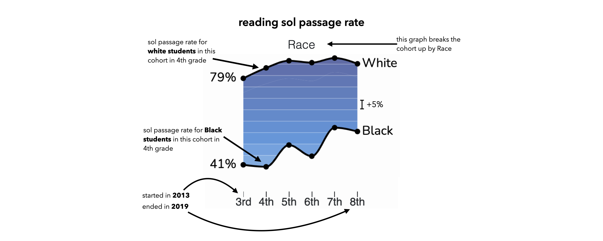

Last Updated: January 2022 - Data from 2012-2018
Return to Summary Page
Using data on reading pass rates from the Virginia Reading SOL test, we track a cohort of students who began third grade in 2012-2013 and finished eighth grade in 2017-2018 and visually investigate the advantages and disadvantages students are presented in school settings. Do the gaps present in third grade decrease as formal edcuation continues? Or do they persist or increase as the impact of unequal educational environments accumulate?
How to Read this Visualization
